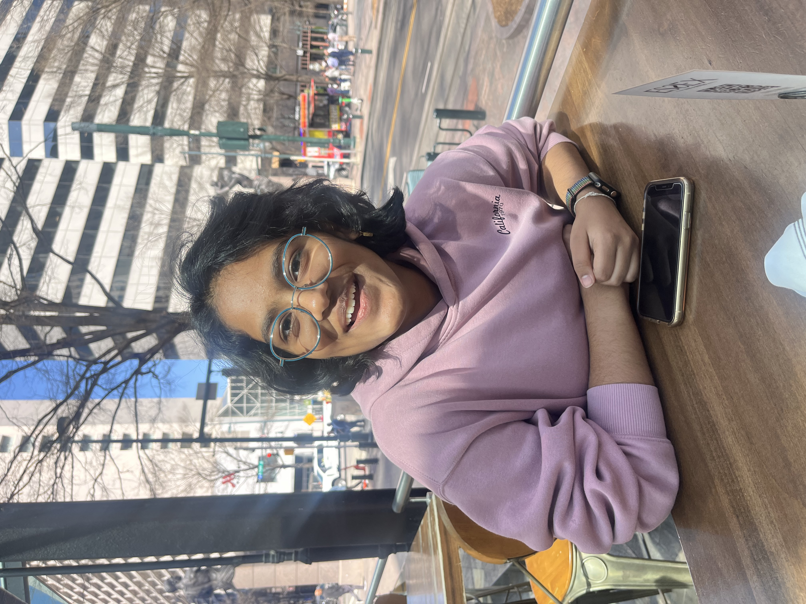
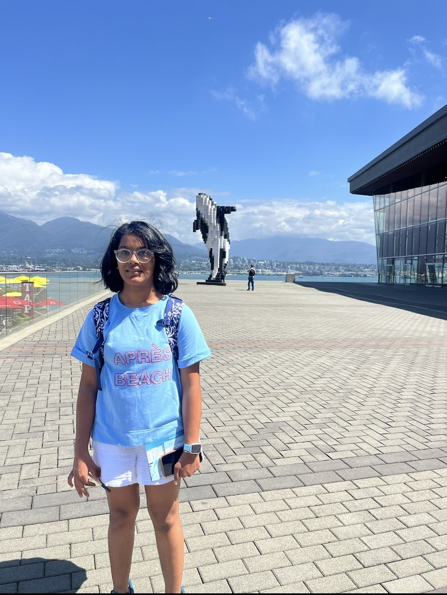

P2 Tutoring

Prisha
Hello! My name is Prisha Garg and I am currently a rising junior at Cox Mill High School.
A little bit about me: I am currently the Co-Captain of Cox Mill’s VEX robotics team, future Co-Captain of Cox Mill’s FRC robotics team, been to 4 hackathons (2 in NYC, 1 at UNCC, and 1 near SC) in the past 7 months, held my own hackathon this past February, and co-founded the Hack Club branch at Cox Mill. If you would like to view my projects, I have linked my Github profile in the footer. Moreover, having completed AP Precalculus, AP World History, and AP Physics I in the past year, I understand the increasing pressure new students might feel going into high school and I would like to ease the stress that they have about these types of classes.

Priyanshi
Hi! My name is Priyanshi Garg and I am a rising junior at the North Carolina School of Science and Mathematics. I was the Co-Captain of the Cox Mill VEX robotics team and a member of the Cox Mill FRC team. I have taken AP World History and AP Computer Science A in my sophomore year. Apart from that, I am also the founder of the Hack Club branch at Cox Mill. As a Hack Clubber, I have been to 3 hackathons in the past year and have also organized my own, Campfire Charlotte. I have a strong foundation in Java, web development (HTML/CSS), and game design using Godot, and I recently traveled to Manhattan, NY for a scavenger hunt funded by Hack Club. This is my personal website to learn more about me: https://pgarg111.github.io/my_profile/